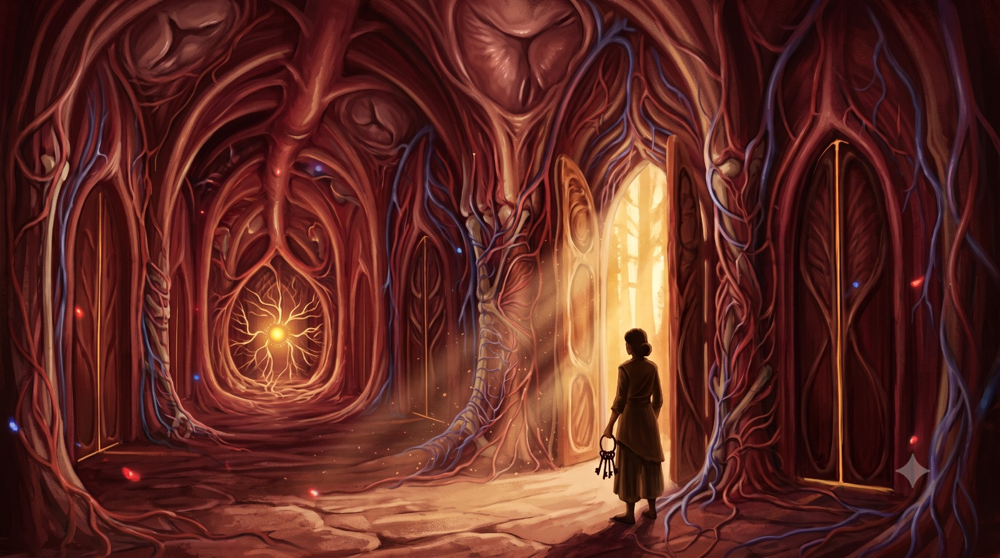

This week I saw a pattern I have been running for over twenty years.
Every time I get wounded, I find a person to hold responsible. The wound becomes a grudge. The grudge becomes a story. The story becomes me versus them.
Then I heal. Life moves. A new wound arrives, and with it, a new person.
The faces change. The names change.
The structure never does.
It started in my marriage. My in-laws wounded me, some of it perceived, some of it very real, and I held a grudge against them for years. When I walked out of the marriage, my ex-husband made sure I lost my daughter. That wound got a grudge of its own. Then came the betrayals of 2021, the ones that took my body down and took three years to climb back from. New faces. Same grudge. Same story. Me versus them, with righteousness as the fuel.
And here is the thing. Each grudge felt true. At a certain altitude, each grudge was true. Someone did do the thing. People act from their own nature, and it is inherently impossible for a human being to do good all of the time unless they have taken up the work of transformation. So I want to be precise about this: the wounds were real.
The grudge was what I built
on top of them.
This week I finally saw the grudge for what it is. Sediment. Sediment in a channel that is supposed to carry something much bigger than my grievances.
Chapter I
Power needs a clean channel
Here is the frame that changed everything for me.
The Mother’s Force works through instruments. Shakti descends into a channel. And a channel has a specification: it has to be clean. Clean of personal grievance. Clean of me versus them. Clean of the wound running the show from behind the curtain.
That specification has a name. Sri Aurobindo calls it equality:
The very first necessity for spiritual perfection is a perfect equality.
The first necessity. Before the visions. Before the gifts. Before any of the things seekers chase. Equality is the load-bearing wall.
Because when I hold a grudge, I am projecting personal grievances into the channel. And power will not descend into a contaminated channel. Or worse, it descends crooked, through the occult routes that exist on this planet, and it harms.
I will never let that happen through me. I would rather annihilate myself than move darkness through this body, this mind, this vital. I choose the path of light, and the path of light has an entry requirement I can no longer negotiate with.
The capacity to hold power is growing in me. Which means the tolerance for this flaw is shrinking.
What a smaller container could get away with, a larger one cannot.
Chapter II
What equality actually is
Here is where most people get equality wrong. They hear the word and imagine passivity. A spiritual smile. Endless tolerance. Never drawing a line, because drawing a line would be judgment, and judgment is unspiritual.
That is a collapse wearing
the costume of a virtue.
I set rules. I draw hard lines. I have refused people entry into the work and expelled what threatened it. Equality removed none of that.
Equality changed where the action moves from.
A grudge says: you hurt me, and I will hold it against you. A boundary says: this does not serve the work, and it does not enter. The first moves from the wound. The second moves from poise. From the outside, the two can look identical. From the inside, they are different universes.
Sri Aurobindo gives the full principle: active surrender to what is higher, active rejection of what is lower. One motion, two faces. The hand that offers everything up is the same hand that holds the sword.
Equality is what makes
the sword safe to hold.
Chapter IV
The assignment
And custody comes with an assignment. One line, total scope: transform the undivine into the Divine.
A Soul that is strong can change nature. That is the entire technology of this path. So the work runs in one direction, always. From top down into me, and from me outward. In my individual Adhara first. Then in the universal nature I currently inhabit. Every moment, choosing to transform the undivine into the Divine. Every moment. That is the job description in full.
And here is what almost nobody understands about that work: it requires structure. Rules. Guidelines for conduct. Divinization runs on discipline. Active surrender to what is higher, active rejection of what is lower, both at once, while hunting for the highest truth inside all the falsehood this reality still carries.
So yes, I get to determine the rules. I get to destroy what no longer serves. I get to reject, expel, and move out of the way whatever blocks the one purpose, which is transformation. And through that transformation, this reality slowly becomes ready for something far bigger. The descent of the supramental, the Truth-Consciousness Sri Aurobindo and the Mother spent their lives bringing down toward earth. That is where all of this is going. That is what the rules are for.
The assignment comes with one condition. I must accept it without qualms. Without wondering whether I can do it. And above all, without personal attachment or personal agenda toward any aspect of the nature I am working on. Absolute objectivity. Observe. Witness. Then choose, from the single Soul value of equality, what transforms and what goes.
There it is again. Equality.
This time as a job requirement.
Because look at what my grudge actually was, inside this frame. A personal agenda toward an aspect of nature. A private account running inside the custodian. The exact contamination the assignment prohibits. The adhikara to set rules was given to me along with the purpose, and it is only safe in hands that hold equality. The moment the rules become personal, I stop being the custodian. I become just another wound with power.
And a wound with power is one of the most dangerous things on this planet.
Chapter V
The training ground
This reality is also a training ground, and the training has been running longer than I realized.
Ten years ago my capacity was one container. My own Adhara. That was the entire territory I could transform, and I worked on it because it was collapsing and I had no other option.
Then the scope expanded. One client. Then more. Today it is more than ten thousand clients. More than a thousand students. Supplements that have reached close to one lakh homes. I am listing this as the visible edge of an invisible thing: Soul power expanding through a reality, exactly as fast as the instrument could bear it.
Eight billion humans occupy this planet. The earth itself is one mega mass of nature waiting on transformation. Ten years ago I could work on a single unit of it. The capacity has grown every year since, and it keeps growing on one condition. I do not give up. I do not get exhausted and dogged out and quit. Perseverance is the fee.
And underneath the perseverance sits the real position. I was placed here because the Divine and His Shakti wanted me here. I represent that Consciousness and that Force, as flawed and imperfect as I still am. The deal is exact: as I purify, the universal around me purifies. The work happens through the instrument at the rate the instrument gets clean.
Which brings the grudge back one more time.
Every year I held it, I was capping the work.
Chapter VI
The other Souls
Every other person in my life was also placed here.
Each of them occupies their own reality, their own material plane. And they have crossed over into this one. The Venn diagrams overlap. My team. My family. My teachers. My students. The ten thousand clients. Each one carries a Soul as powerful as mine. Each one arrives with a specific mastery over some aspect of nature. One brings breathwork as a tool. One brings the theory and structure of the integral yoga itself. One brings the plant medicine way of unlocking nature’s mysteries. One brings knowledge I do not carry and could not generate alone. I learn from them, and whatever they master, I bring back into this reality and use it to transform everything else it touches.
Together it looks like this: specks and dots of light coming together into a massive ball of light. And that massive ball of light is what it takes to transform the far bigger ball of unconscious matter we are all standing on.
But their nature traits crossed over with them too. The conscious ones and the unconscious ones. And some of the unconscious ones work directly against what this co-created reality is meant to produce.
As custodian, I get two moves. I can make the unconscious trait conscious for them, hold it up in the light, so they can choose to transform it. Or, if the trait is fused to the ego and refuses transformation, and it starts clouding the purification this reality has already paid for in blood, I get to sweep it out. Do not enter.
Both moves are only clean from equality. The first move, made from a grudge, becomes humiliation. The second, made from a grudge, becomes revenge.
Made from poise, the first is a gift and the second is hygiene.
Chapter VII
What nature does in return
And here is the part that turns the whole thing from duty into romance.
The word occult simply means hidden. And nature has incredible mysteries of light hidden inside Her. That is what She was designed for. She hides light, in all of light’s multi-dimensional forms, and She waits.
The more of my nature I transform, with nature’s consent, the more of those mysteries unlock. The more my Soul exerts its power and genuinely loves Her, romances Her, the more She is willing to reveal. Her powers. Her creativity. Her magic. Every moment She unmasks another aspect of Herself.
It is the most blissful way of existing I have found. Consciousness and Force, Soul and nature, working the transformation together. This is Divine Union. This is Divine Love. This is Yoga in its truest sense: Consciousness and Force united. The rules and the discipline are real. So is this.
Chapter VIII
The surrender
So this week I surrendered the pattern.
Where did it come from? Genetics, family systems, repeat loops in the ancestral line. Irrelevant. I do not need the archaeology. It exists, and it has to go. Bleached out of my nature, once and for all.
I offered it to the Mother. I asked for grace. I asked every being of light that works on this planet, the ones the rational mind rolls its eyes at and the heart recognizes instantly, to help clean it out. Because I cannot do the removal myself. That is the entire point of surrender. My job is the offering. The Divine does the extraction.
The lesson is simple to say and it costs everything to live:
stop making things personal.
Chapter IX
What the heart turned out to be
And then, once the pattern was on the altar, the actual teaching arrived.
The heart is multi-dimensional. Multi-chambered. Far more architecture in there than one lifetime of feelings would suggest.
The traditions count thirty-three chambers in the heart center. Thirty-three inner sanctuaries. Each one holds a different frequency: love, compassion, forgiveness, wisdom, remembrance of the Divine. These are energetic dimensions, encoded in the Soul, and they reveal themselves one at a time, at exactly the pace your awareness and your healing can hold.
The body keeps the record of the sealed ones. The heart center governs the physical heart, the lungs, the chest, circulation, the thymus, the immune system. A closed chamber shows up in tissue. Tightness in the chest. Breath that never drops below the collarbone. Immunity that keeps buckling. I see this in clinic constantly, and the lab work agrees with the mystics more often than either side would like to admit.
And on the standard list of what seals a chamber shut, right there alongside fear of intimacy and over-giving and jealousy: holding grudges.
Of course.
Fear turns chambers into walls and calls it protection. The door fear guards hardest is usually the one where the most love is waiting. Some chambers hold grief: heartbreak, abandonment, the long ache of missing someone. Witnessed honestly, those rooms stop being dark. They become the places where compassion gets made.
Go deeper and there is a higher heart. Some call it the cosmic heart. Some call it the seat of the Soul. Sri Aurobindo’s map and this one point at the same room: the psychic being, standing quietly behind the heart center. The personal heart loves persons. The higher heart loves everything. It is the bridge between human emotion and Divine Love, and it comes online only as the deeper chambers open beneath it.
An open heart is also measurable. The heart radiates an electromagnetic field, and as chambers clear, that field becomes coherent. Coherence radiates outward and touches the collective. This is the mechanics behind the image I was given earlier: specks of light gathering into a ball of light. A coherent heart is how one speck brightens.
Even abundance obeys the chambers. Scarcity in the outer life mirrors chambers sealed by fear and shame. Trust and worthiness reopen the flow. Giving and receiving freely is heart mechanics long before it is ever money.
So here is where twenty years of the rotating cast finally lands.
Every block I remove opens another chamber. Fear was a block. Anxiety was a block. Scarcity was a block. The grudge, it turns out, was a block. And behind each cleared chamber, something flows in that I did not put there.
The Soul’s inherent strengths. Its values. Its traits. Equality is one of them.
You do not build equality. It is already there, an attribute of the Soul, standing behind a locked door, waiting.
The work was never construction.
The work is removal.
And thirty-three chambers means one thing above everything else: nobody is done. However much you have already felt, there is more love, more capacity, more of you.
Surrender the block. What was always yours comes through. The channel gets cleaner. The power gets closer.
Chamber by chamber,
the heart opens.
And She gets a cleaner instrument to work with.
That is the work. That is the whole work.
Mugdha Pradhan
Mugdha Pradhan is the Founder and CEO of iThrive. Nine years in clinical practice, 10,000+ clients, 174 conditions. Author of Health, Inc. and a clinical textbook covering 44 therapeutic peptides. 2x TEDx speaker. Published researcher. Functional medicine, quantum biology, breathwork, peptides, Integral Yoga, Jungian psychology.
I help humans remember what they are.